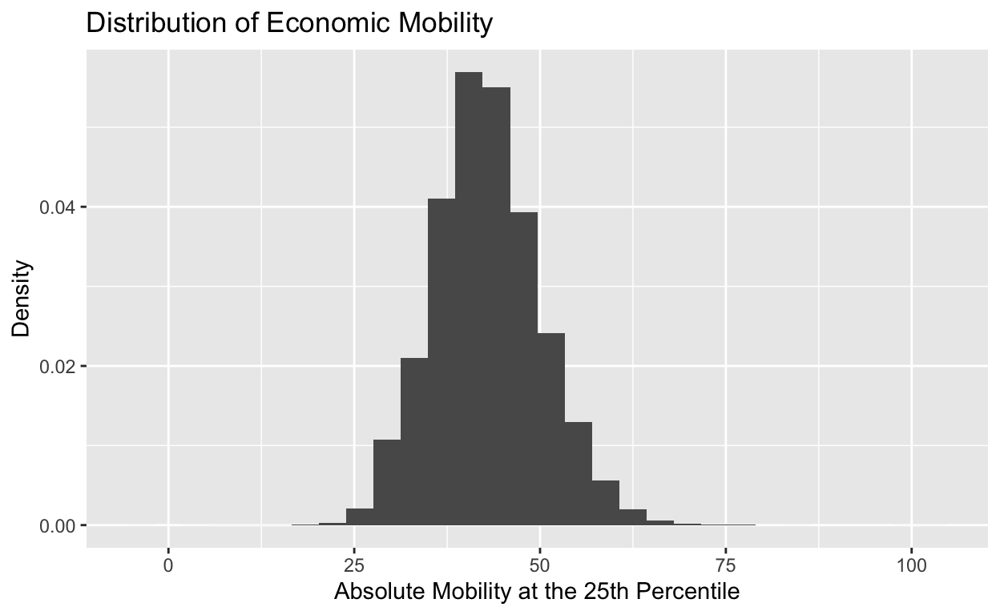
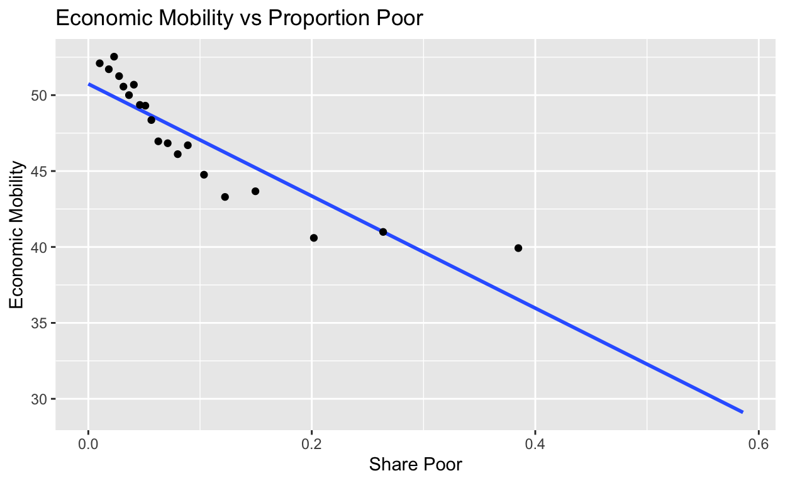
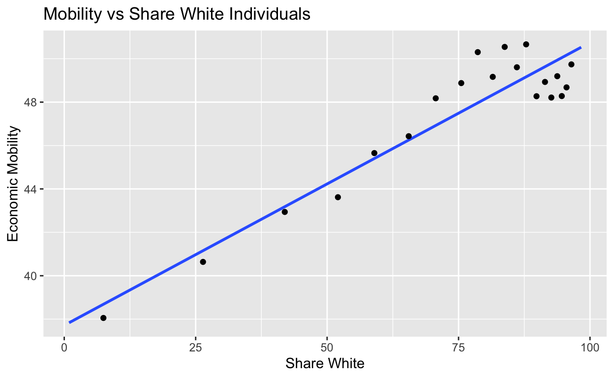
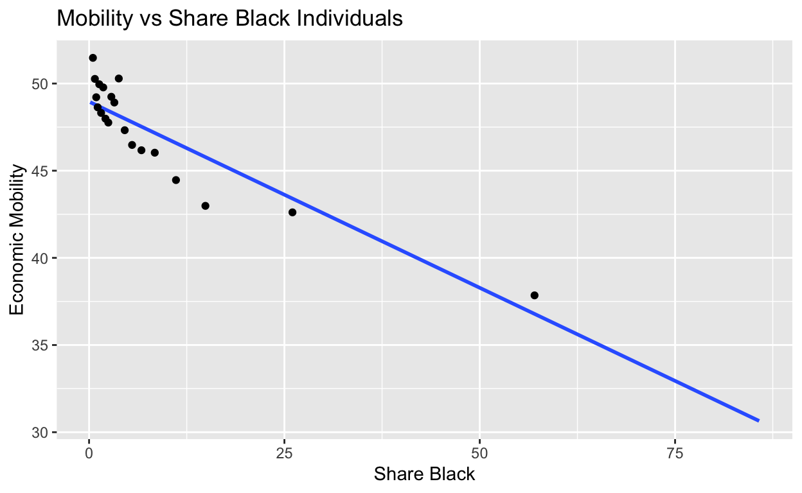
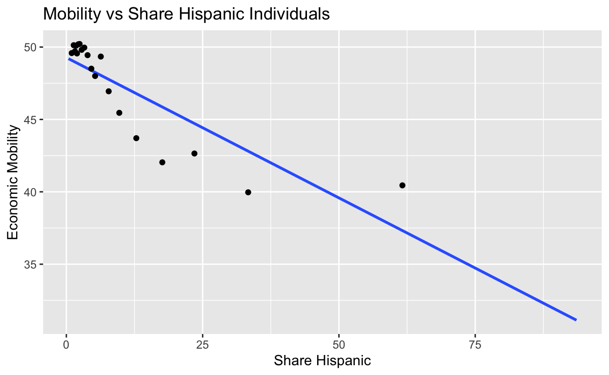

My final project
Are the social and economic ramifications of redlining still prevalent today? In this study, I plan to examine the extent to which regions in Cambridge display the longer-term effects of redlining practices. I hypothesize that Cambridge’s minority communities are disproportionately represented in areas of higher socioeconomic stress – due not only to matters of personal sorting or preference, but more so due to systemic factors propagating from decades of redlining practices riddled with historical discrimination.
Redlining is a practice that dates back to 1934. One of the most salient effects of redlining was the development of segregated neighborhoods. By denying loans to residents of certain neighborhoods, financial institutions created a concentration of poverty in these areas (Legal Information Institute). I believe that this research project can contribute to a greater discussion on redlining practices, and how their detrimental effects can disproportionately harm even future generations of minorities.
If my results indicate that ZIP codes with higher proportions of white people had higher average mobility than ZIP codes with high proportions of minorities, then this data would support my hypothesis. If the trend saw that ZIP codes with higher proportions of white people had similar or smaller average mobility than ZIP codes with high proportions of minorities, then this observed data pattern would disprove my hypothesis. When I run a regression for correlation between proportion of white people and average mobility, a positive, significant coefficient would indicate support for my hypothesis. This, coupled with a negative coefficient between proportion of minority and average mobility would indicate support that ZIP codes that are redlined, have lower economic mobility.
My sample for this project will be the Opportunity Atlas, which contains data on adult incomes, racial breakdown, parent incomes, and more. My sample contains anonymous data following 20 million Americans from childhood to their mid-30s (collected from de-identified data from the 2000 and 2010 decennial Censuses). My unit of analysis is a specific ZIP code representing a small region, or in other words, my individual datapoints each represent one ZIP code.
The primary explanatory variable is the racial composition in different ZIP codes, measured by the different proportions of white, black, or hispanic residents. This data can be obtained from census records, which provide detailed, comprehensive demographic data broken down by racial and ethnic groups at various geographical levels, ensuring variation in the racial composition across different areas. I will be analyzing the outcome variable of “absolute mobility at the 25th percentile”, and to do so, I will use the predicted rank of a child for a given parent’s income rank, for which units are measured as the mean percentile rank according to the 2010 decennial Census. For this metric, higher values will correspond with higher upward mobility.
Thus, the research design was a cross-sectional observational study since the data regarding these variables was collected at one point in time across the sample populations. It is an observational study since the participants were not organized into control and treatment groups beforehand – they were simply measured or recorded. The key dependent variable I’m examining is absolute mobility at the 25th percentile, or economic mobility, as stated above. The following plot represents the density distribution of the dependent variable:

Here, we can see a normal distribution of the economic mobility metric, which simplifies analysis and interpretation, ensuring that the data is well-behaved and representative of a typical scenario, without extreme skewness or outliers.
My justification for utilizing absolute mobility at the 25th percentile as a metric for economic mobility is two-fold. First, “absolute upward mobility” at the 25th percentile is a commonly used measure in economics to predict long-term economic outcomes (Handy and Chester). Secondly, within my dataset, higher levels of poverty were negatively correlated with absolute mobility at the 25th percentile, demonstrating that mobility is a good long-term indicator of economic outcomes.

To identify the effects of redlining, I classify the population of Cambridge into different racial groups to examine the relationship between racial composition and rates of social mobility. Since redlining practices from 1934 largely segregated neighborhoods based on racial demographic, I seek to examine how various demographic compositions have fared in terms of long-term economic mobility, to see if the effects of redlining, which occurred in 1934, are being felt today.
For all demographics below, I use a significance level of alpha at 0.05.
I first analyze the correlation between the proportion of white residents (coded as share_white_2010) in 2010, and the economic mobility metric. As illustrated in the below figure, regions with a higher percentage of white residents showed a stronger tendency towards achieving higher levels of social mobility. The correlation coefficient for the below visualization was 0.484, indicating a strong positive relationship between mobility and proportion of white individuals in a given ZIP code.

Furthermore, when running a linear regression between economic mobility and proportion of white individuals, the coefficient of share_white (the slope) in the linear regression was 0.13 and the p value was less than 0.05 (p-value = 2.2e-16), indicating a statistically significant relationship.
In other words, each one percentage point increase in proportion of white people in a given ZIP code corresponded with a 0.130 increase in mean percentile rank for economic mobility. This ultimately means that, a higher proportion of white people in a given region leads to better future economic prospects.
| Economic Mobility vs Share White | |
|---|---|
| (Intercept) | 37.713 |
| s.e. = 0.544 | |
| p = <0.001 | |
| share_white | 0.130 |
| s.e. = 0.007 | |
| p = <0.001 | |
| Num.Obs. | 1123 |
| R2 | 0.235 |
| R2 Adj. | 0.234 |
Conversely, a different pattern is observed in the black population of Cambridge. The below figure illustrates a negative correlation between share_black2010 and kfr_pooled_pooled_p25. These variables represent the percentage of black residents in a region and the social mobility metric, respectively.
The correlation coefficient for the below visualization was -0.433, indicating a strong negative relationship between mobility and proportion of black individuals in a given ZIP code.

Furthermore, when running a linear regression between economic mobility and proportion of black individuals, the coefficient of share_black (the slope) in the linear regression was -0.214 and the p value was less than 0.05 (p-value = 2.4e-16), indicating a statistically significant relationship.
In other words, each one percentage point increase in proportion of black people in a given ZIP code corresponded with a 0.214 decrease in mean percentile rank for economic mobility. Essentially, this implies that an increased percentage of black individuals in an area is associated with reduced levels of social mobility.
| Economic Mobility vs Share Black | |
|---|---|
| (Intercept) | 48.961 |
| s.e. = 0.205 | |
| p = <0.001 | |
| share_black | −0.214 |
| s.e. = 0.013 | |
| p = <0.001 | |
| Num.Obs. | 1123 |
| R2 | 0.187 |
| R2 Adj. | 0.186 |
A similar trend follows for Hispanic populations. With a correlation coefficient of -0.440, this indicates a strong negative correlation between these variables, suggesting that areas with a higher proportion of Hispanic residents tend to have lower social mobility. This observation aligns with the historical context of redlining affecting Hispanic communities.

Furthermore, when running a linear regression between economic mobility and proportion of hispanic individuals, the coefficient of share_hisp (the slope) in the linear regression was -0.194, and the p-value in this scenario was less than 0.05 (p-value = 2.2e-16), indicating a statistically significant relationship.
In other words, each one percentage point increase in proportion of hispanic people in a given ZIP code corresponded with a 0.194 decrease in mean percentile rank for economic mobility. This means that a higher proportion of hispanic individuals in a given area is associated with lower levels of economic mobility.
| Economic Mobility vs Share Hispanic | |
|---|---|
| (Intercept) | 49.274 |
| s.e. = 0.213 | |
| p = <0.001 | |
| share_hisp | −0.194 |
| s.e. = 0.012 | |
| p = <0.001 | |
| Num.Obs. | 1123 |
| R2 | 0.194 |
| R2 Adj. | 0.193 |
| White | Black | Hispanic | |
|---|---|---|---|
| Mobility Coefficient | 0.130 | -0.214 | -0.194 |
| p-value | 2.2e-16 | 2.4e-16 | 2.2e-16 |
Holistically, we can conclude that the regions of Cambridge subjected to redlining correlated with reduced mobility factors, coinciding with the locations where minority groups, particularly Black individuals, were concentrated due to these policies. For White populations, a higher percentage of white individuals corresponded with higher economic mobility, whereas for Black/Hispanic populations, a higher percentage of Black/Hispanic individuals corresponded with lower levels of economic mobility. The results are also statistically significant, with p-values that have a very small magnitude across all demographics (at an alpha of 0.05).
What this ultimately implies is that there is a correlation between areas affected by redlining and those suffering from systemic discrimination and poverty issues. However, we are unable to establish full causality between redlining and long-term economic outcomes due to a number of potential confounding variables such as educational opportunities, employment opportunities, and access to transportation. The results of the study could likely vary if they were accounted for.
In conclusion, the analysis of various regions disproportionately affected by redlining practices revealed a noticeable pattern of reduced mobility, particularly in areas where minority groups, especially Black and Hispanic individuals, were concentrated due to these policies. For white populations, higher proportions of white individuals corresponded with higher economic mobility, and higher proportions of minority individuals corresponded with lower economic mobility. The statistical significance of the coefficient at an alpha level of 0.05 held unilaterally across every demographic.
While these analyses alone do not pinpoint a causal relationship, these findings seem to align with the hypothesis that redlined areas, historically subjected to systemic discrimination and poverty, continue to experience socio-economic repercussions. Conversely, areas predominantly inhabited by white populations likely enjoyed benefits from robust investment and development, backed by strong governmental support and generational wealth.
At the same time, it is important to acknowledge that this analysis has its fair share of limitations, primarily due to its cross-sectional nature, which may not comprehensively capture the dynamic and evolving impacts of redlining over time. Furthermore, there are various confounding variables that were likely at play, including but not limited to: educational opportunities, job availabilities, access to transportation, or even access to healthcare.
In the future, with more resources, I could access longitudinal data that could provide a more detailed picture of economic mobility over time. This could involve purchasing proprietary datasets or conducting extensive data collection efforts to track generational changes in economic status. I also think that commissioning in-depth interviews and ethnographic studies with residents of historically redlined communities could provide valuable insights into the qualitative aspects of economic mobility, as well as the lived experiences of discrimination.
Handy, C., & Shester, K. L. (2022). Local changes in intergenerational mobility. Labour Economics, 78, 102168. https://doi.org/10.1016/j.labeco.2022.102168
Legal Information Institute. (n.d.). Redlining. Legal Information Institute. https://www.law.cornell.edu/wex/redlining#